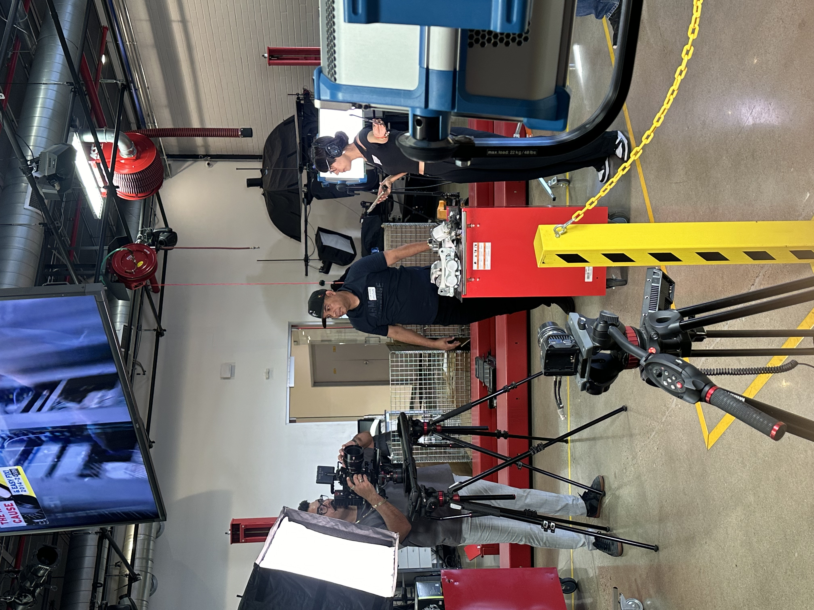
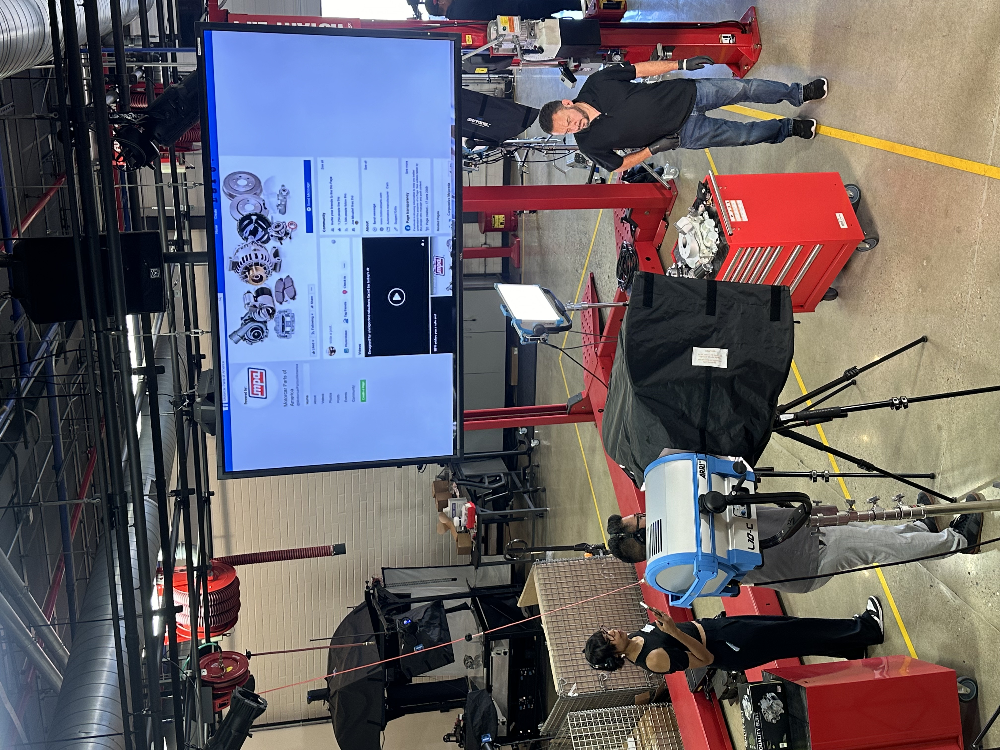
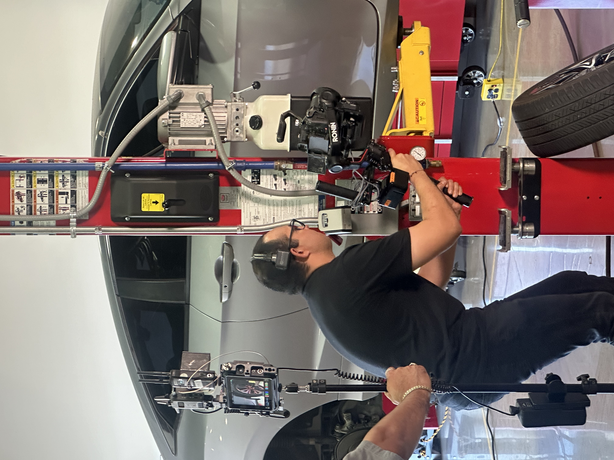
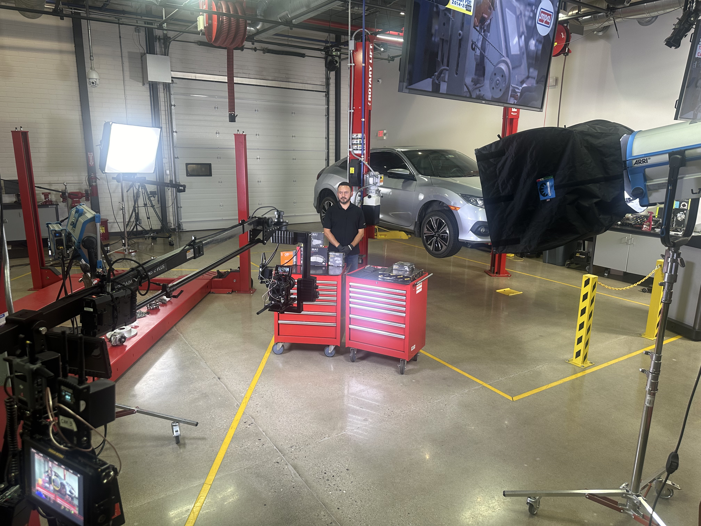
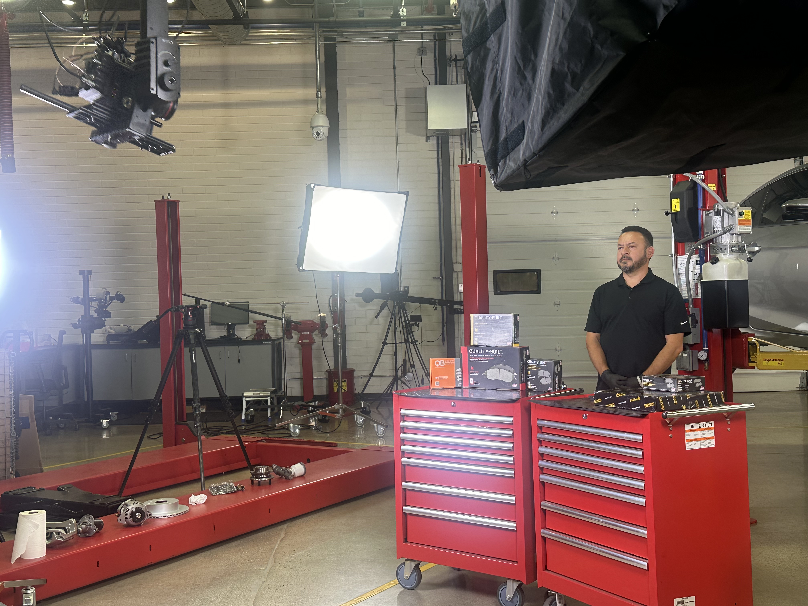
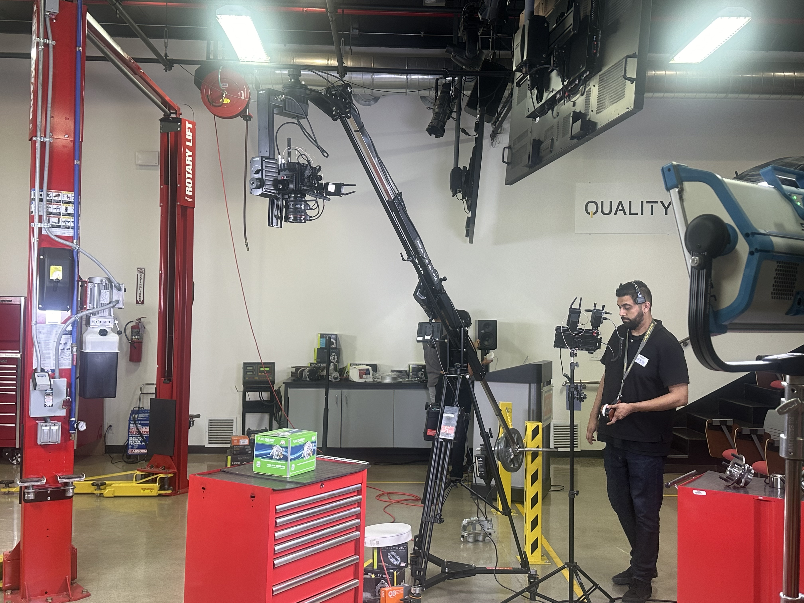
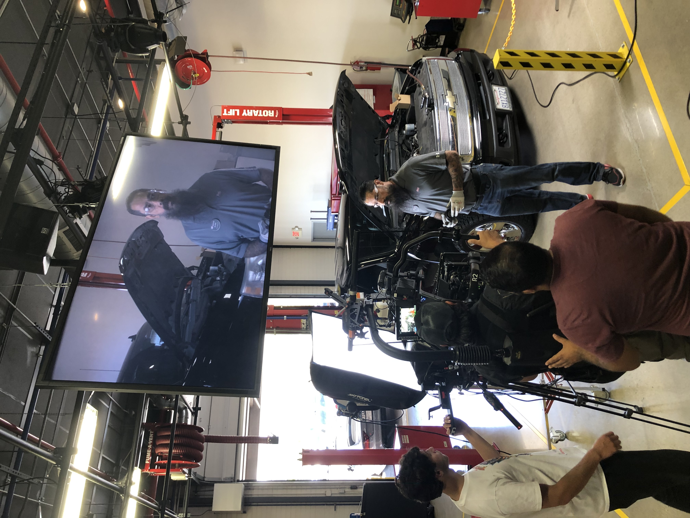
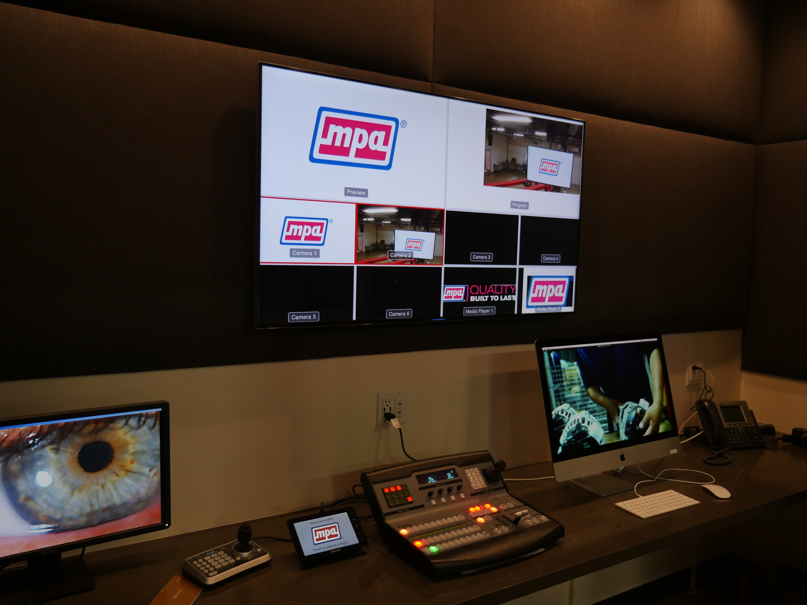
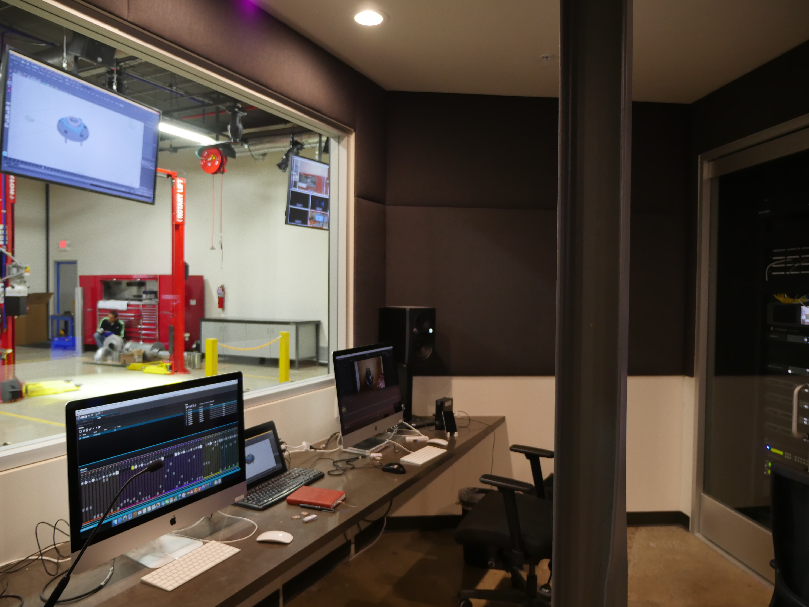

JOE MICALLEF
CREATIVE DIRECTOR
MULTIMEDIA/DESIGN/CODE
Videography
Videos for Manufacturing
Motorcar Parts of America
MPA innovation Studio Broadcast Garage
At Motorcar Parts of America, I managed an eight-person creative team of motion graphics artists, editors, designers, and animators within a hybrid production environment that combined a two-lift automotive garage with a state-of-the-art broadcast studio. The facility was outfitted with a full Blackmagic production workflow, including four HyperDecks, an HDMI switcher, Blackmagic 4K cameras, a Yamaha sound board, DMX lighting, ARRI SkyPanel LED fixtures, and Crestron-controlled lighting systems. I was responsible for both team leadership and oversight of the studio’s production equipment, technical infrastructure, control decks, and servers.










Long-Format Technical Video Series
As Director of the Innovation Studio at MPA, I led the development, scripting, editing, direction, motion graphics (using After Effects), and animation strategy (using Blender and Maya) for this video series. Animation was used to make complex automotive concepts easier to understand by revealing internal mechanics, visualizing failure points, and adding clarity where live-action footage alone was not enough.
- Clarifies hidden mechanical processes
- Helps explain part failure and installation issues
- Supports educational content for technicians and DIY installers
Short-Format Story Videos
In addition to long-form installation and educational content, I developed a short-form video strategy that reused footage from our larger library, allowing the team to create more content quickly and publish several times a week. This helped grow our YouTube channel, supported warranty reduction through better installer education, and created a well-structured media library with potential future value for AI training and smarter content workflows.
ACE Clearwater / DASH9 Productions
At ACE Clearwater, an aerospace manufacturer in Torrance California, I helped establish a small studio called DASH9 Productions. In overseeing this effort, the goal was to produce video training content to help train the next generation of drop hammer and manufacturing tool operators. Zbrush was used to speed up the modeling process with rendering and animation done in Blender.